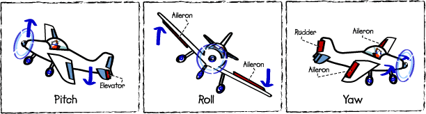
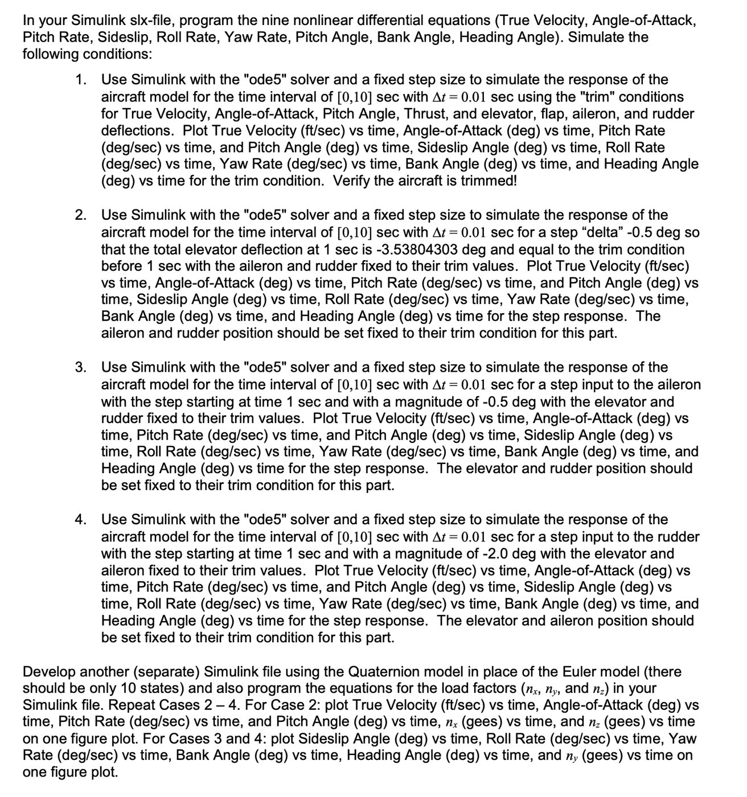
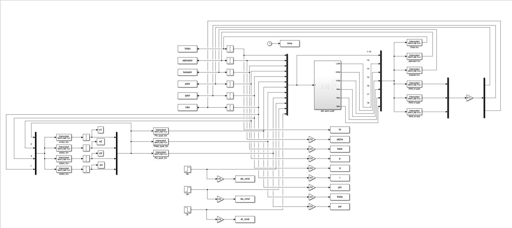

Flight Dynamics Simulation
Aircraft response, in Simulink — same kind of analysis as the X-62 VISTA testbed.
A cool project from a Flight Dynamics course at RIT — simulating aircraft response to different conditions in Simulink and MATLAB. Similar code shows up in the analysis of the experimental X-62 VISTA fighter jet.

What you simulate
Trim conditions, stick steps, rudder steps, aileron steps, all at a fixed time step in ode45. For each one, you log true velocity, pitch rate, roll rate, yaw rate, angle of attack, sideslip, and Euler angles. Then you replay it against a quaternion model and compare.

How it's wired up
A quaternion model in Simulink, driven by inputs from MATLAB. Nine aircraft were simulated across the same conditions; only the quaternion runs are shown because they're the reliable ones.

Results
These results can be compared directly against actual data collected from aircraft testing — a pilot is asked to fly different conditions, and the simulation either matches or it doesn't. If the control system isn't behaving the way it's expected to, the comparison will show it.

Why quaternion over Euler
Euler angles are useful — intuitive, easy to read. The downside is gimbal lock: a phenomenon where two rotational axes line up and you lose a degree of freedom, plus you get mathematical singularities that make the integration blow up. Quaternions avoid that, at the cost of being less intuitive to read.